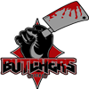

2020 Championship The Austin Copperheads have defeated the Colorado Yeti in the 2020 Championship. The Austin Copperheads have defeated the Colorado Yeti in the 2020 Championship.
The final score was Copperheads 38 - 32 Yeti.
Easton Cole (C) - QB had a dominant game on offense playing a key part in the victory.
On defense Adelie de Pengu - LB had a stellar outing providing a silver lining to the loss.
Con Championship GameThe Austin Copperheads have defeated the New Orleans Second Line in the 2020 Con Championship Game.
The final score was Copperheads 24 - 14 Second Line.
Marcella Toriki - RB had a dominant game on offense even while his team lost.
On defense Mack Arianlacher - LB had a stellar outing helping seal the win.Con Championship Game The Colorado Yeti have defeated the San Jose SaberCats in the 2020 Con Championship Game. The Colorado Yeti have defeated the San Jose SaberCats in the 2020 Con Championship Game.
The final score was Yeti 35 - 21 SaberCats.
Darrel Williams - RB had a dominant game on offense playing a key part in the victory.
On defense George Fisher - LB had a stellar outing providing a silver lining to the loss.
Con Divisional RoundThe Austin Copperheads have defeated the Chicago Butchers in the 2020 Con Divisional Round.
The final score was Copperheads 30 - 29 Butchers.
Zoe Watts (R) - RB had a dominant game on offense playing a key part in the victory.
On defense Griffin Porter - LB had a stellar outing helping seal the win.Con Divisional Round The New Orleans Second Line have defeated the Sarasota Sailfish in the 2020 Con Divisional Round. The New Orleans Second Line have defeated the Sarasota Sailfish in the 2020 Con Divisional Round.
The final score was Sailfish 14 - 20 Second Line.
Ed Barker - WR had a dominant game on offense playing a key part in the victory.
On defense Son Goku - DE had a stellar outing providing a silver lining to the loss.
Con Divisional RoundThe San Jose SaberCats have defeated the Arizona Outlaws in the 2020 Con Divisional Round.
The final score was Outlaws 26 - 32 SaberCats.
Jamar Lackson - RB had a dominant game on offense playing a key part in the victory.
On defense Logan Noble Jr. - DE had a stellar outing providing a silver lining to the loss.Con Divisional RoundThe Colorado Yeti have defeated the Orange County Otters in the 2020 Con Divisional Round.
The final score was Yeti 34 - 10 Otters.
Wolfie McDummy (C) - QB had a dominant game on offense playing a key part in the victory.
On defense Pete Parker - FS had a stellar outing helping seal the win.Con Wildcard RoundThe Chicago Butchers have defeated the Berlin Fire Salamanders in the 2020 Con Wildcard Round.
The final score was Fire Salamanders 24 - 26 Butchers.
Julio Tirtawidjaja - RB had a dominant game on offense playing a key part in the victory.
On defense Von Hayes - DE had a stellar outing helping seal the win.Con Wildcard Round The Sarasota Sailfish have defeated the Honolulu Hahalua in the 2020 Con Wildcard Round. The Sarasota Sailfish have defeated the Honolulu Hahalua in the 2020 Con Wildcard Round.
The final score was Sailfish 24 - 23 Hahalua.
Nicholas Ayers - RB had a dominant game on offense even while his team lost.
On defense Fawn Dillmiballs (C) - LB had a stellar outing helping seal the win.
Con Wildcard RoundThe New Orleans Second Line have defeated the New York Silverbacks in the 2020 Con Wildcard Round.
The final score was Second Line 31 - 13 Silverbacks.
Marcella Toriki - RB had a dominant game on offense playing a key part in the victory.
On defense Mason Blaylock - FS had a stellar outing helping seal the win.Con Wildcard RoundThe San Jose SaberCats have defeated the Baltimore Hawks in the 2020 Con Wildcard Round.
The final score was SaberCats 30 - 18 Hawks.
Jamar Lackson - RB had a dominant game on offense playing a key part in the victory.
On defense Tyron Brackenridge (C) - LB had a stellar outing helping seal the win.Con Wildcard RoundThe Colorado Yeti have defeated the Yellowknife Wraiths in the 2020 Con Wildcard Round.
The final score was Yeti 23 - 10 Wraiths.
Darrel Williams - RB had a dominant game on offense playing a key part in the victory.
On defense Greedy Sly - CB had a stellar outing helping seal the win.Con Wildcard Round The Orange County Otters have defeated the Philadelphia Liberty in the 2020 Con Wildcard Round. The Orange County Otters have defeated the Philadelphia Liberty in the 2020 Con Wildcard Round.
The final score was Otters 39 - 14 Liberty.
Alex Dasistwirklichseinnachname - K had a dominant game on offense playing a key part in the victory.
On defense Korrin Abernathy - CB had a stellar outing helping seal the win.
Week 18: QB Colby Jack (YKW) wins Offensive Player of the Week The Yellowknife Wraiths' Colby Jack threw 5 touchdowns, completing 28 of 39 passes for 378 yards in the Wraiths victory over the Philadelphia Liberty. The Yellowknife Wraiths' Colby Jack threw 5 touchdowns, completing 28 of 39 passes for 378 yards in the Wraiths victory over the Philadelphia Liberty.
After being drafted in Round 0 of the 0 amateur draft, season number 4 for Jack, has seen some impressive numbers including 29 touchdown passes this season.
Week 18: LB Juan Domine (R) (CHI) wins Defensive Player of the WeekLB Juan Domine (R) of the Chicago Butchers has earned the Defensive Player of the Week award. Domine (R) finished with 11 Tck, 1 Sck, 1 Def TD, 1 FF, 1 FR.Game Recaps for Week 18Wraiths - 37, Liberty - 31
Otters - 18, Hawks - 8
Outlaws - 33, SaberCats - 20
Copperheads - 20, Sailfish - 17
Butchers - 27, Hahalua - 24
Fire Salamanders - 23, Silverbacks - 14Game of the Week: Austin Copperheads at Sarasota SailfishOur Expert Predictions:
Jeremy Piper : Austin Copperheads
Looking at how the teams match up, I cannot see how anyone would not think that Samuel Bakhtiari - T is critical. He is having a great season. Look for him to continue padding his stats this week.
Mary Moore : Sarasota Sailfish
Surely, the Sailfish win. Do not let anyone tell you otherwise.
Jim Nox : Austin Copperheads
They field one of the most underestimated defenses. They are 4th in points allowed, averaging only 24.1. They are 5th in run defense. Giving up only 88.9 yards per game.
Darren Francis : Austin Copperheads
They play great together. Having a guy like Easton Cole (C) - QB on the field who understands what everyone needs to do and helping them play as a unit will help them a great deal in this game. Replace the batteries in your remote. You do not want to miss this game.
Dissatisfaction after Fire Salamanders-Second Line game! Hank Steel (C) was angry in his postgame interview after the Fire Salamanders' loss. The Fire Salamanders DT said he lost all respect for the Fire Salamanders. 'I think this game proves that sometimes teams get lucky in this league, and that the Fire Salamanders just got lucky', he said. Hank Steel (C) was angry in his postgame interview after the Fire Salamanders' loss. The Fire Salamanders DT said he lost all respect for the Fire Salamanders. 'I think this game proves that sometimes teams get lucky in this league, and that the Fire Salamanders just got lucky', he said.
Week 17: RB Joseph Petrongolo (BER) wins Offensive Player of the WeekThe honor comes after Petrongolo's 21 att, 153 yds, 2 TD, 3 rec, 15 yds, 1 TD performance against the Chicago Butchers. Petrongolo from Vanderbilt was selected in round 0, 3 years ago.
Petrongolo now has 1438 Rushing Yards and 15 Touchdowns for the season.Week 17: SS Benoit Blanco (BER) wins Defensive Player of the WeekSS Benoit Blanco of the Berlin Fire Salamanders has earned the Defensive Player of the Week award. Blanco finished with 7 Tck, 1 Sck, 1 Def TD, 1 FF, 1 FR.Game Recaps for Week 17Yeti - 42, Outlaws - 28
SaberCats - 26, Wraiths - 21
Copperheads - 27, Hahalua - 13
Fire Salamanders - 41, Butchers - 23
Second Line - 23, Hawks - 17
Liberty - 33, Silverbacks - 24
Sailfish - 31, Otters - 24Game of the Week: Austin Copperheads at Honolulu HahaluaOur Expert Predictions:
Jeremy Piper : Honolulu Hahalua
This should be obvious to anyone who looks a the teams.
Mary Moore : Austin Copperheads
Team play. Playing as a unit. You cannot discount the difference it makes. I am thinking of a guy like Easton Cole (C) - QB. Playing as a team is what gets them the win. You heard it here first.
Jim Nox : Austin Copperheads
They will win again this week.
Darren Francis : Honolulu Hahalua
Their offense will step up this game. They are 1st in the league pass completion percentage. If they lose this one, I will never hear the end of it.
Yellowknife Wraiths upset the Baltimore Hawks!The Yellowknife Wraiths fans are celebrating after the Wraiths took down the Baltimore Hawks.
In a superb effort the Wraiths kept at it, and brought home the win. The Hawks are widely considered to be the better of the two programs, but with the Wraiths winning the fans are hoping that the Wraiths will soon be able to dance with the big boys.Honda Edmond ridicules the Fire Salamanders.Honda Edmond was pretty blunt in his postgame interview after the Copperheads's win. The Copperheads LB made no efforts to hide his lack of respect for the Fire Salamanders. 'I think this game proves where our team is, and that the Fire Salamanders just are not at our level', he said.Week 16: QB Easton Cole (C) (AUS) wins Offensive Player of the WeekThe Austin Copperheads' Easton Cole (C) threw 4 touchdowns, completing 33 of 45 passes for 379 yards in the Copperheads victory over the Berlin Fire Salamanders.
After being drafted in Round 0 of the 0 amateur draft, season number 10 for Cole (C), has seen some impressive numbers including 26 touchdown passes this season.Week 16: FS Pete Parker (COL) wins Defensive Player of the WeekFS Pete Parker of the Colorado Yeti has earned the Defensive Player of the Week award. Parker finished with 5 Tck, 2 Int, 1 Def TD.Game Recaps for Week 16Wraiths - 33, Hawks - 10
Yeti - 41, Liberty - 13
Otters - 23, SaberCats - 21
Butchers - 21, Silverbacks - 20
Copperheads - 44, Fire Salamanders - 24
Second Line - 34, Hahalua - 19
Outlaws - 27, Sailfish - 24Game of the Week: New Orleans Second Line at Honolulu HahaluaOur Expert Predictions:
Jeremy Piper : New Orleans Second Line
This is a very good defense. They are 1st in points allowed, averaging only 21.3. They are 3rd in pass defense. They only give up 244.7 per game. They are 2nd in run defense. Giving up only 81.1 yards per game. They are 3rd in the league in tackles for loss. They are 1st in the league pass average yards per rush.
Mary Moore : New Orleans Second Line
I think having a team players like Medicinal Toblerone (R) - DE is the kind of thing that will help the Second Line win this game. This will either be wildly entertaining or a dull grind. I see no middle between the two.
Jim Nox : Honolulu Hahalua
Look for them to continue their winstreak.
Darren Francis : New Orleans Second Line
This is just going by my intuition. This may be a pivotal game for their season.
Criticism of WR Doug Howlett (R) after Hawks-Outlaws game! Gary Goodman (R) pointed the finger at his fellow Hawks players after they lost. 'We have to step up, all of us.' he said. 'But some guys are not stepping up and we end up losing. They need to get their head in the game', he continued. 'Man, I think a bunch of guys let us down. I could point the finger at many.' the 21 year old DE said. Later in the interview he seemed to indicate that Doug Howlett (R) - WR was one of the players he had in mind. Gary Goodman (R) pointed the finger at his fellow Hawks players after they lost. 'We have to step up, all of us.' he said. 'But some guys are not stepping up and we end up losing. They need to get their head in the game', he continued. 'Man, I think a bunch of guys let us down. I could point the finger at many.' the 21 year old DE said. Later in the interview he seemed to indicate that Doug Howlett (R) - WR was one of the players he had in mind.
Week 15: QB Luke Skywalker (C) (HON) wins Offensive Player of the Week The Honolulu Hahalua' Luke Skywalker (C) threw 4 touchdowns, completing 29 of 41 passes for 319 yards in the Hahalua victory over the Orange County Otters. The Honolulu Hahalua' Luke Skywalker (C) threw 4 touchdowns, completing 29 of 41 passes for 319 yards in the Hahalua victory over the Orange County Otters.
After being drafted in Round 0 of the 0 amateur draft, season number 4 for Skywalker (C), has seen some impressive numbers including 23 touchdown passes this season.
Week 15: LB Mack Arianlacher (AUS) wins Defensive Player of the WeekLB Mack Arianlacher of the Austin Copperheads has earned the Defensive Player of the Week award. Arianlacher finished with 10 Tck, 1 Sck, 2 FF, 2 FR.Game Recaps for Week 15Outlaws - 29, Hawks - 28
SaberCats - 27, Yeti - 24
Butchers - 24, Sailfish - 6
Silverbacks - 34, Fire Salamanders - 14
Hahalua - 28, Otters - 14
Copperheads - 41, Wraiths - 7
Second Line - 20, Liberty - 10Game of the Week: Arizona Outlaws at Baltimore HawksOur Expert Predictions:
Jeremy Piper : Arizona Outlaws
For this game, my opinion is that The Outlaws rely on Desmond Scarlett - CB on their defense. Big names make big plays in big games, I cannot wait to watch this. Replace the batteries in your remote. You do not want to miss this game.
Mary Moore : Arizona Outlaws
People tend to underestimate their offense. They are 2nd in the league in sacks allowed. They are maulers, 4th in the league in pancakes. They are 4th in the league in passes of more than 20 yards. They are 4th in the league rushing touchdowns with 16. They are 5th in the league points scored per game. They average 28.9!
Jim Nox : Arizona Outlaws
They will get back in the winning column this week.
Darren Francis : Arizona Outlaws
Leadership matters in games like this. And when I look at the Outlaws and the leaders they have - Zamir Kehla - CB, Pete Miller - DT and Logan Noble Jr. - DE - I think this gets them the win. This will really be a statement win.
Philadelphia Liberty take home the upset victory! The Philadelphia Liberty surprises everyone with an unlikely road win against Arizona Outlaws. The Philadelphia Liberty surprises everyone with an unlikely road win against Arizona Outlaws.
The Outlaws never manage to take control of the game, while the Liberty kept grinding and drove the victory home. The Outlaws players had expected an easy victory, and this will be a bitter loss and a tough blow to the self-respect of the program. Meanwhile the Liberty fans are ecstatic and are already entertaining thoughts about a cinderella future.
Week 14: RB Marcella Toriki (NOLA) wins Offensive Player of the WeekWeek 14's Offensive Player of the Week is Running Back Marcella Toriki. His 22 att, 115 yds, 3 TD performance stood out in the 42 to 26 victory for the New Orleans Second Line.
The former Oregon gridiron star is racking up the rushing yards and now has 1335 Yards and 15 Touchdowns for the season.Week 14: DE Tex Wrecks (R) (PHI) wins Defensive Player of the WeekDE Tex Wrecks (R) of the Philadelphia Liberty has earned the Defensive Player of the Week award. Wrecks (R) finished with 7 Tck, 2 Sck, 1 FF.Game Recaps for Week 14Yeti - 41, Hawks - 31
Liberty - 34, Outlaws - 20
Second Line - 42, Butchers - 26
Hahalua - 24, Sailfish - 17
Copperheads - 26, Silverbacks - 18
Fire Salamanders - 33, SaberCats - 31Game of the Week: Colorado Yeti at Baltimore HawksOur Expert Predictions:
Jeremy Piper : Baltimore Hawks
They will win again this week. They might even blow them out.
Mary Moore : Baltimore Hawks
In the context of this game, a good bet is that Ben Stackinpaper - CB is a key cog in the defensive machinery of the Hawks. Should be interesting to see him going against a quality opponent.
Jim Nox : Baltimore Hawks
One of the most underestimated defenses. They are 4th in points allowed, averaging only 23.8. They are 1st in pass defense. They only give up 232.6 per game. They are 2nd in interceptions with 14. They are 3rd in forced fumbles. Replace the batteries in your remote. You do not want to miss this game.
Darren Francis : Baltimore Hawks
In the context of this game, it seems obvious that you have to look at this LB named Derred De Ville (C). I expect everyone knows this guy will be a wrecking ball.
Yellowknife Wraiths pull off the upset!With an outstanding effort the Yellowknife Wraiths pull off the upset against Chicago Butchers.
Everyone had expected the Chicago Butchers to handle the Yellowknife Wraiths with easy, but the Wraiths just wanted it more. This was really a must win game for the Butchers, and the loss will surely put a dent in their confidence.Winning pleases everyone. Silverbacks fans are celebrating this week after their team mopped the floor with the Second Line. Brandon Acker said of his team, ,We’re hungry as a team. We’re so hungry, we go into restaurants, look at the menu, and say OK.’ Silverbacks fans are celebrating this week after their team mopped the floor with the Second Line. Brandon Acker said of his team, ,We’re hungry as a team. We’re so hungry, we go into restaurants, look at the menu, and say OK.’
Week 13: WR Leeroy Jenkins (COL) wins Offensive Player of the WeekLeeroy Jenkins of the Colorado Yeti receives the offensive player of the week honors for his 5 rec, 163 yds, 2 TD effort. The former Round 0 selection is racking up the receiving yards, bringing his season total to 941 yards on the season.Room blasts Brock Bodenhamer (R) - WR in wake of Second Line loss.White Room was furious with his team in an interview after the Second Line lost. He called out the effort on both offense and defense. 'These guys, they do not seem hungry. We have to get on the same page. Are we doing this or not?', he complained. 'Man, I think a bunch of guys let us down. I could point the finger at many.' the 22 year old G said. Later in the interview he seemed to indicate that Brock Bodenhamer (R) - WR was one of the players he had in mind.Week 13: DE Gary Goodman (R) (BAL) wins Defensive Player of the WeekDE Goodman (R) absolutely dominated in the Hawks 41-28 game with the San Jose SaberCats. He finished with 5 Tck, 2 Sck, 1 FF.Game Recaps for Week 13Hawks - 41, SaberCats - 28
Outlaws - 32, Otters - 13
Yeti - 34, Liberty - 7
Sailfish - 35, Copperheads - 24
Fire Salamanders - 36, Hahalua - 9
Silverbacks - 20, Second Line - 17
Wraiths - 21, Butchers - 14Game of the Week: Sarasota Sailfish at Austin CopperheadsOur Expert Predictions:
Jeremy Piper : Austin Copperheads
With leaders like Dermot Lavelle Jr. - CB and Easton Cole (C) - QB in the locker room it is easy to see why the Copperheads win this game. A double digit win.
Mary Moore : Austin Copperheads
They will keep their winstreak going. This will be watercooler talk on monday. Do not miss it.
Jim Nox : Sarasota Sailfish
Head coach Brandon Norwood does a great job getting them prepared every week. This week will be no different. He is doing some clever things with his defense.
Darren Francis : Austin Copperheads
In this game, my view is that Dermot Lavelle Jr. - CB is going to be a difference maker on the Copperheads defense.
Week 12: LB Fawn Dillmiballs (C) (SAR) wins Defensive Player of the WeekLB Dillmiballs (C) absolutely dominated in the Sailfish 41-17 game with the Colorado Yeti. He finished with 6 Tck, 1 Int, 1 Def TD.Week 12: RB Julio Tirtawidjaja (CHI) wins Offensive Player of the WeekWeek 12's Offensive Player of the Week is Running Back Julio Tirtawidjaja. His 21 att, 165 yds, 2 TD, 6 rec, 40 yds, 0 TD performance stood out in the 35 to 28 victory for the Baltimore Hawks.
The former Nebraska gridiron star is racking up the rushing yards and now has 813 Yards and 11 Touchdowns for the season.Game Recaps for Week 12Outlaws - 37, Wraiths - 30
Otters - 24, SaberCats - 19
Copperheads - 29, Second Line - 23
Hahalua - 27, Silverbacks - 10
Hawks - 35, Butchers - 28
Sailfish - 41, Yeti - 17
Fire Salamanders - 23, Liberty - 13Game of the Week: Austin Copperheads at New Orleans Second LineOur Expert Predictions:
Jeremy Piper : New Orleans Second Line
In this game, a good bet is that David Rector - CB will shine for the Second Line defense.
Mary Moore : New Orleans Second Line
They will win again this week.
Jim Nox : New Orleans Second Line
They play great together. Having a guy like Medicinal Toblerone (R) - DE on the field who understands what everyone needs to do and helping them play as a unit will help them a great deal in this game.
Darren Francis : New Orleans Second Line
Head coach Joseph Alfaro runs a tight ship in New Orleans. I feel certain he has prepared an excellent gameplan. He is running a great offense. Defensively he makes great adjustments. When they win here, people will take notice.
Optimism after Fire Salamanders-Second Line game!Joseph Petrongolo was optimistic in his postgame interview after the loss to the Second Line. 'I think we played well and showed some things. The Second Line are a good team and we played them well. There is plenty of promise on this roster, and we will be back and get them next time. Until then it is all about working hard to get there.' the 21 year old RB said.Week 11: RB Zoe Watts (R) (AUS) wins Offensive Player of the WeekThe honor comes after Watts (R)'s 24 att, 120 yds, 1 TD, 3 rec, 28 yds, 1 TD performance against the Colorado Yeti. Watts (R) from Stanford was selected in round 0, 2 years ago.
Watts (R) now has 816 Rushing Yards and 10 Touchdowns for the season.Week 11: FS Shawn Dawkins (C) (HON) wins Defensive Player of the WeekFS Shawn Dawkins (C) of the Honolulu Hahalua has earned the Defensive Player of the Week award. Dawkins (C) finished with 4 Tck, 1 Int, 1 Def TD.Game Recaps for Week 11Hawks - 30, Otters - 20
Liberty - 34, Wraiths - 31
Sailfish - 19, Butchers - 13
Second Line - 23, Fire Salamanders - 21
Copperheads - 41, Yeti - 34
Hahalua - 32, Outlaws - 20Game of the Week: Colorado Yeti at Austin CopperheadsOur Expert Predictions:
Jeremy Piper : Austin Copperheads
Looking at how the teams match up, I agree with popular opinion that Eddie Jeeta - WR is hard to gameplan for. Look for him to dominate. This will either be wildly entertaining or a dull grind. I see no middle between the two.
Mary Moore : Austin Copperheads
Their win streak will not be broken in this game.
Jim Nox : Austin Copperheads
I have a lot of respect for head coach Herb Mast. He is doing great things in Austin. He is has a really good understanding of what works offensively. A close win.
Darren Francis : Austin Copperheads
This is just going by my intuition.
Butchers lost. Butchers is ok with that.Mike Hockhertz pointed no fingers and saw the upside to the Butchers loss. 'Surely, we lost, but we were playing well. I think this is a testament to our character and preparation' said Hockhertz. He added: 'The Fire Salamanders are a good team, but I we played our hearts out and kept grinding. We learned a lot from this game, and it will help us in the future'.Week 10: RB Marcella Toriki (NOLA) wins Offensive Player of the WeekWeek 10's Offensive Player of the Week is Running Back Marcella Toriki. His 14 att, 124 yds, 2 TD performance stood out in the 31 to 13 victory for the New Orleans Second Line.
The former Oregon gridiron star is racking up the rushing yards and now has 935 Yards and 9 Touchdowns for the season.Week 10: CB Dan Foster (R) (YKW) wins Defensive Player of the WeekCB Foster (R)'s ball hawking ability was on display in the Yeti 29-18 game with the Yellowknife Wraiths. He finished with 7 Tck, 1 Int, 1 Def TD.
"Dan has the unique ability to make plays and generate turnovers." -Wraiths Defensive CoordinatorGame Recaps for Week 10Yeti - 29, Wraiths - 18
SaberCats - 37, Liberty - 20
Second Line - 31, Silverbacks - 13
Copperheads - 41, Fire Salamanders - 31
Outlaws - 33, Sailfish - 30Game of the Week: Austin Copperheads at Berlin Fire SalamandersOur Expert Predictions:
Jeremy Piper : Austin Copperheads
For this match up, I would argue that Lesean Crooks - CB is a guy to keep an eye on. He is putting up a solid season. He will run wild in this game unless the offense gameplans for him. They get their win and this game will be just another day at the office.
Mary Moore : Austin Copperheads
Certainly, this offense will have a good game. They are 4th in the league pass completion percentage. They are 2nd in the league passing yards per game. They average 319.1! They are 2nd in the league rushing touchdowns with 13. They are 2nd in the league points scored per game. They average 30.6!
Jim Nox : Austin Copperheads
For difficult games like this you need leaders. Leaders in the locker room and leaders on the field. When I look at the Copperheads players like Dermot Lavelle Jr. - CB, Easton Cole (C) - QB and Apato Saurus - C stand out in that regard. They might even win with three touchdowns.
Darren Francis : Berlin Fire Salamanders
In the context of this game, I think that Swantavius Jones (R) - CB can take over a game. There is a reason they are paying him that much money. They will rack up a lot of points.
Sly unhappy after Yeti close loss.Greedy Sly was angry in his postgame interview after the Yeti' loss. 'Surely, we have to take responsibility, but they were playing dirty, and it is a testament to their character' said the Yeti Greedy Sly - CB. He continued: 'The Yeti' players will likely take offense to this, but I do not care. It is what it is, they did not deserve to win'.'Week 9: FS Pete Parker (COL) wins Defensive Player of the WeekFS Pete Parker of the Colorado Yeti has earned the Defensive Player of the Week award. Parker finished with 4 Tck, 1 Int, 1 Def TD.Week 9: RB Joseph Petrongolo (BER) wins Offensive Player of the WeekWeek 9's Offensive Player of the Week is Running Back Joseph Petrongolo. His 27 att, 217 yds, 2 TD performance stood out in the 37 to 27 victory for the Berlin Fire Salamanders.
The former Vanderbilt gridiron star is racking up the rushing yards and now has 673 Yards and 6 Touchdowns for the season.Game Recaps for Week 9Yeti - 24, Hawks - 17
Outlaws - 28, SaberCats - 22
Otters - 31, Wraiths - 15
Second Line - 30, Hahalua - 20
Fire Salamanders - 37, Sailfish - 27
Silverbacks - 17, Butchers - 14Game of the Week: Sarasota Sailfish at Berlin Fire SalamandersOur Expert Predictions:
Jeremy Piper : Berlin Fire Salamanders
The difference in this game will be their defense. They are 3rd in sacks with 24. A single digit win.
Mary Moore : Sarasota Sailfish
You have to think of the roles Bob Doe - G and None Beat - SS play on this team. They are the players who make everyone work together as a team. Playing as a unit will ensure the Sailfish win these difficult games.
Jim Nox : Sarasota Sailfish
Head coach Brandon Norwood runs a tight ship in Sarasota. I feel certain he has prepared an excellent gameplan. He is one of the best defensive minds.
Darren Francis : Berlin Fire Salamanders
Definitely the losing streak is on their minds. They will get the win and break it in this game.
Week 8: QB Easton Cole (C) (AUS) wins Offensive Player of the WeekThe Austin Copperheads' Easton Cole (C) threw 3 touchdowns, completing 27 of 35 passes for 368 yards in the Copperheads victory over the Arizona Outlaws.
After being drafted in Round 0 of the 0 amateur draft, season number 10 for Cole (C), has seen some impressive numbers including 11 touchdown passes this season.Cardrissian gloats after SaberCats victory.Rando Cardrissian did not hold his tongue in a post game interview. 'That was a pretty poor showing on their part' said the Rando Cardrissian - RB SaberCats. Continuing with details about the Hawks's players missed tackles and lack of communication Cardrissian did not hold back. He will surely have put off several Hawks fans, as well as people in his own front office.Week 8: LB Dex Kennedy (BAL) wins Defensive Player of the WeekLB Dex Kennedy of the Baltimore Hawks has earned the Defensive Player of the Week award. Kennedy finished with 8 Tck, 2 Int, 1 Def TD.Game Recaps for Week 8Otters - 21, Yeti - 18
Hawks - 43, Liberty - 17
Second Line - 24, Fire Salamanders - 17
Sailfish - 37, Silverbacks - 16
Butchers - 37, Wraiths - 20
Copperheads - 31, Outlaws - 26
Hahalua - 30, SaberCats - 17Game of the Week: San Jose SaberCats at Honolulu HahaluaOur Expert Predictions:
Jeremy Piper : San Jose SaberCats
I think their defense will carry them. They are 4th in sacks with 18. They are 1st in interceptions with 8. They are 3rd in the league pass average yards per rush. They are 5th in forced fumbles. Boy, oh boy am I looking forward to this.
Mary Moore : San Jose SaberCats
They will win again this week. This may be where we see their true colors.
Jim Nox : San Jose SaberCats
Head coach Robert Kline has this team running like a well oiled machine. He is innovative with his defense. There will be some wild plays in this game.
Darren Francis : San Jose SaberCats
People tend to underestimate their offense. They are 3rd in the league average yards per rush. They are 3rd in the league rushing touchdowns with 10. They are 3rd in the league rushing yards per game. They average 132.7! They are 1st in the league points scored per game. They average 34.3! But it will be a close game.
Kackpoo delighted after Hahalua victory.Heinrich Kackpoo came out swinging in an interview after the Hahalua beat the Silverbacks. 'I think we were clearly the better team. You know, the Silverbacks talk a big game, but then this game gave context to that.Week 7: DE Tex Wrecks (R) (PHI) wins Defensive Player of the WeekDE Tex Wrecks (R) of the Philadelphia Liberty has earned the Defensive Player of the Week award. Wrecks (R) finished with 4 Tck, 3 Sck, 1 FF, 1 FR.Week 7: QB Nick Kaepercolin (BER) wins Offensive Player of the WeekThe Berlin Fire Salamanders' Nick Kaepercolin threw 4 touchdowns, completing 37 of 47 passes for 431 yards in the SaberCats victory over the Berlin Fire Salamanders.
After being drafted in Round 0 of the 0 amateur draft, season number 4 for Kaepercolin, has seen some impressive numbers including 12 touchdown passes this season.Game Recaps for Week 7Wraiths - 24, Yeti - 17
Hawks - 38, Outlaws - 27
Otters - 31, Liberty - 28
Sailfish - 30, Second Line - 6
Butchers - 38, Hahalua - 10
Copperheads - 30, Silverbacks - 7
SaberCats - 37, Fire Salamanders - 34Game of the Week: Sarasota Sailfish at New Orleans Second LineOur Expert Predictions:
Jeremy Piper : New Orleans Second Line
I see them winning again this week.
Mary Moore : New Orleans Second Line
I think having a team players like Medicinal Toblerone (R) - DE is the kind of thing that will help the Second Line win this game. Replace the batteries in your remote. You do not want to miss this game.
Jim Nox : Sarasota Sailfish
I really think having so strong and vocal leaders like Fawn Dillmiballs (C) - LB and Arlington Heights (R) - DE in the locker room and on the field is invaluable and definitely helps the Sailfish win this game. There will be some very good football to watch here.
Darren Francis : Sarasota Sailfish
For this game, I have to point out that the defense will struggle to counter Raphtalia Chan - RB. Watch out for him.
Butchers lost. Butchers is ok with that.Juan Domine (R) pointed no fingers and saw the upside to the Butchers loss. 'Surely, we lost, but we were playing well. I think this is a testament to our character and preparation' said Domine (R). He added: 'The Fire Salamanders are a good team, but I we played our hearts out and kept grinding. We learned a lot from this game, and it will help us in the future'.Week 6: RB Julio Tirtawidjaja (CHI) wins Offensive Player of the WeekThe honor comes after Tirtawidjaja's 14 att, 119 yds, 4 TD performance against the Austin Copperheads. Tirtawidjaja from Nebraska was selected in round 0, 4 years ago.
Tirtawidjaja now has 423 Rushing Yards and 9 Touchdowns for the season.Week 6: CB Greedy Sly (COL) wins Defensive Player of the WeekCB Greedy Sly of the Colorado Yeti has earned the Defensive Player of the Week award. Sly finished with 3 Tck, 1 Int, 1 Def TD.Game Recaps for Week 6Outlaws - 35, Wraiths - 26
Yeti - 62, SaberCats - 27
Butchers - 37, Copperheads - 27
Sailfish - 13, Fire Salamanders - 10
Second Line - 27, Hawks - 16
Hahalua - 25, Otters - 21
Silverbacks - 24, Liberty - 20Game of the Week: Baltimore Hawks at New Orleans Second LineOur Expert Predictions:
Jeremy Piper : Baltimore Hawks
The Hawks are the real deal. Really this could go either way, but you will never get me to admit it.
Mary Moore : New Orleans Second Line
They play great together. Having a guy like Medicinal Toblerone (R) - DE on the field who understands what everyone needs to do and helping them play as a unit will help them a great deal in this game.
Jim Nox : Baltimore Hawks
Certainly, this offense will have a good game. They are 2nd in the league passing touchdowns with 12. They are maulers, 5th in the league in pancakes. They are 2nd in the league in passes of more than 20 yards. They are 5th in the league average yards per rush. It may even be a blow out.
Darren Francis : Baltimore Hawks
Eldrick Avery - CB. Doug Howlett (R) - WR. IHeart Syracuse - FS. Leaders! That is what they have and that is what they need. This game will be so very entertaining.
Optimism after Otters-Liberty game!Suleiman Ramza (R) pointed no fingers and saw the upside to the Otters loss. 'Surely, we lost, but we were playing well. I think this is a testament to our character and preparation' said Ramza (R). He added: 'The Liberty are a good team, but I we played our hearts out and kept grinding. We learned a lot from this game, and it will help us in the future'.Week 5: QB Nick Kaepercolin (BER) wins Offensive Player of the WeekThe league announced Berlin Fire Salamanders quarterback Nick Kaepercolin has been named Offensive Player of the Week.
The Fire Salamanders defeated the Orange County Otters, 30 to 24. Kaepercolin did his part, throwing 4 touchdowns, completing 36 of 45 passes for 365 yards. His outstanding performance now brings his season Touchdown to Interception Ratio to 7 to 4, and a passer rating of 101.2.Week 5: CB Zamir Kehla (ARI) wins Defensive Player of the Week CB Zamir Kehla of the Arizona Outlaws has earned the Defensive Player of the Week award. Kehla finished with 9 Tck, 1 Int, 1 Def TD. CB Zamir Kehla of the Arizona Outlaws has earned the Defensive Player of the Week award. Kehla finished with 9 Tck, 1 Int, 1 Def TD.
Game Recaps for Week 5Outlaws - 22, Liberty - 19
Fire Salamanders - 30, Otters - 24
Hawks - 14, Silverbacks - 10Game of the Week: Berlin Fire Salamanders at Orange County OttersOur Expert Predictions:
Jeremy Piper : Berlin Fire Salamanders
They have a dominant defense. They do not get enough credit for that. They are 4th in the league pass average yards per rush. A tough choice. I think it will be a close game.
Mary Moore : Orange County Otters
The leadership on the Otters is great. You look at guys like Rapid Eagle - DT and what he does for a team. Leadership like that helps you win games.
Jim Nox : Berlin Fire Salamanders
For this match up, I think that Swantavius Jones (R) - CB can drive quarterbacks crazy. Look for him to dominate.
Darren Francis : Orange County Otters
I see them winning again this week.
Biggums targets LB Joseph Joestar after Otters loss.Tyrone Biggums was angry with his teammates after the loss. He said that the entire team needed to step up. However, he also singled out some teammates. 'Man, I think a bunch of guys let us down. I could point the finger at many.' the 21 year old FS said. Later in the interview he seemed to indicate that Joseph Joestar - LB was one of the players he had in mind.Week 4: RB Darrel Williams (COL) wins Offensive Player of the WeekWeek 4's Offensive Player of the Week is Running Back Darrel Williams. His 19 att, 207 yds, 2 TD performance stood out in the 44 to 38 victory for the Austin Copperheads.
The former LSU gridiron star is racking up the rushing yards and now has 432 Yards and 6 Touchdowns for the season.Week 4: CB Dermot Lavelle Jr. (AUS) wins Defensive Player of the WeekCB Dermot Lavelle Jr. of the Austin Copperheads has earned the Defensive Player of the Week award. Lavelle Jr. finished with 4 Tck, 1 Int, 1 Def TD.Game Recaps for Week 4Hawks - 48, Liberty - 13
Otters - 27, Wraiths - 20
Second Line - 38, Butchers - 20
Sailfish - 27, Hahalua - 23
Copperheads - 44, Yeti - 38
SaberCats - 26, Silverbacks - 10Game of the Week: New York Silverbacks at San Jose SaberCatsOur Expert Predictions:
Jeremy Piper : New York Silverbacks
Looking at how the teams match up, I cannot help but think that Silverbacks got to love fielding an defense with Jayson Kearse - DE. He will be critical this week, and is likely to be dominant. There are so many factors to consider when making predictions. This one was easy though.
Mary Moore : San Jose SaberCats
This will be a very up and down affair.
Jim Nox : San Jose SaberCats
In the context of this game, you would be a fool not to think that HeHateMe PickSix - CB is bound to have an impact. The offense will have to gameplan for him if they want to stand even the slightest chance. Believe me.
Darren Francis : San Jose SaberCats
The better team wins. The SaberCats are the better team. No argument. I am looking forward to watching this showdown.
Week 3: QB Jay Cue (C) (ARI) wins Offensive Player of the WeekThe Arizona Outlaws' Jay Cue (C) threw 4 touchdowns, completing 24 of 35 passes for 308 yards in the Outlaws victory over the Orange County Otters.
After being drafted in Round 0 of the 0 amateur draft, season number 8 for Cue (C), has seen some impressive numbers including 5 touchdown passes this season.Week 3: FS Shawn Dawkins (C) (HON) wins Defensive Player of the WeekFS Dawkins (C)'s ball hawking ability was on display in the Hahalua 43-24 game with the New York Silverbacks. He finished with 6 Tck, 1 Sck, 2 Int, 1 Def TD.
"Shawn has the unique ability to make plays and generate turnovers." -Hahalua Defensive CoordinatorGame Recaps for Week 3SaberCats - 33, Wraiths - 17
Outlaws - 37, Otters - 30
Copperheads - 33, Second Line - 20
Hahalua - 43, Silverbacks - 24
Butchers - 20, Yeti - 17Game of the Week: New York Silverbacks at Honolulu HahaluaOur Expert Predictions:
Jeremy Piper : New York Silverbacks
Do not throw statistics at me! The Silverbacks win because they are the better team.
Mary Moore : New York Silverbacks
Look for their offense to dominate. But it will be much closer than many think..
Jim Nox : New York Silverbacks
They field one of the most underestimated defenses. This will be a very up and down affair.
Darren Francis : New York Silverbacks
Looking at the two rosters, I think that you have to look at this DT named Bubba Thumper (C). I expect everyone knows this guy will be a wrecking ball.
'I am better than Butchers' Bender B. Rodriguez', says Doug Howlett (R)WR Doug Howlett (R) sparked up a friendly rivalry with Doug Howlett (R) in an interview with local news. Doug Howlett (R) brings up Bender B. Rodriguez every chance he gets, it seems. 'Is he faster than me? nah. Look at the tape, once the pads come on he slows down. Sure, he is good and he may even be as good as me some day.' The Hawks WR said. Certainly such words will set the internet forums on fire, and it will be interesting to see if Bender B. Rodriguez takes the bait and responds.Week 2: RB Sam Torenson (PHI) wins Offensive Player of the WeekWeek 2's Offensive Player of the Week is Running Back Sam Torenson. His 21 att, 205 yds, 2 TD performance stood out in the 31 to 29 victory for the Philadelphia Liberty.
The former North Carolina gridiron star is racking up the rushing yards and now has 296 Yards and 2 Touchdowns for the season.Week 2: DE Immanuel Blackstone (C) (COL) wins Defensive Player of the WeekDE Blackstone (C) absolutely dominated in the Yeti 34-30 game with the Arizona Outlaws. He finished with 5 Tck, 2 Sck, 1 FF.Game Recaps for Week 2Yeti - 34, Outlaws - 30
Liberty - 31, Otters - 29
SaberCats - 51, Hawks - 21
Butchers - 27, Copperheads - 16
Hahalua - 39, Fire Salamanders - 35
Silverbacks - 30, Sailfish - 16
Second Line - 24, Wraiths - 10Game of the Week: Baltimore Hawks at San Jose SaberCatsOur Expert Predictions:
Jeremy Piper : San Jose SaberCats
This is a high powered offense.
Mary Moore : San Jose SaberCats
Believe me.
Jim Nox : San Jose SaberCats
I think having a team players like Jamar Lackson - RB is the kind of thing that will help the SaberCats win this game. Expect a great game.
Darren Francis : Baltimore Hawks
Look for them to build on their last win.
Liberty lost. Liberty casts blame.Harsh words after the SaberCats - Liberty game from Tex Wrecks (R). The Liberty DE called out the Liberty' players, suggesting some of his teammates were phoning it in. 'Man, I think a bunch of guys let us down. I could point the finger at many.' the 21 year old DE said. Later in the interview he seemed to indicate that Dorothy Zbornak - DE was one of the players he had in mind.Week 1: QB Suleiman Ramza (R) (OCO) wins Offensive Player of the WeekThe Orange County Otters' Suleiman Ramza (R) threw 3 touchdowns, completing 12 of 20 passes for 370 yards in the Otters victory over the Colorado Yeti.
After being drafted in Round 0 of the 0 amateur draft, season number 4 for Ramza (R), has seen some impressive numbers including 3 touchdown passes this season.Week 1: DE Troen Egghands (AUS) wins Defensive Player of the WeekDE Egghands absolutely dominated in the Copperheads 33-21 game with the Honolulu Hahalua. He finished with 3 Tck, 2 Sck, 1 FF.Game Recaps for Week 1Hawks - 28, Wraiths - 17
Otters - 31, Yeti - 28
SaberCats - 32, Liberty - 16
Fire Salamanders - 24, Butchers - 22
Copperheads - 33, Hahalua - 21
Sailfish - 33, Second Line - 24Season PredictionsThe sports journalists association has published the results of this year's division prediction polls among their twenty top sports journalists.
Conference 1 Division 1: Moreno Valley Keys with 12 votes (Runner up: Warren Swamp Bats with 6 votes)
Conference 2 Division 2: Knoxville Hurricanes with 9 votes (Runner up: Los Angeles Golden Hawks with 7 votes)Trade AlertThe Turkeys trade Jacob Small - K and a Turkeys 2021 7th Round Pick to the Sundevils for Datsum PhastBawls - K.Game of the Week: Warren Swamp Bats at Charleston JazzOur Expert Predictions:
Jeremy Piper : Charleston Jazz
I really like their offense.
Mary Moore : Charleston Jazz
One of the most underestimated defenses. You heard it here first.
Jim Nox : Warren Swamp Bats
Replace the batteries in your remote. You do not want to miss this game.
Darren Francis : Charleston Jazz
For this game, it should be clear that Rickie Vaughne (R) - CB needs to show up, but if he does the Jazz will be shutting people down.
G William Bills (N/A) has retired!G William Bills (47 ovr) has retired after failing to get signed in free agency.CB Simon Dominguez (N/A) has retired!CB Simon Dominguez (50 ovr) has retired after failing to get signed in free agency.CB Bertram Harms (N/A) has retired!CB Bertram Harms (35 ovr) has retired after failing to get signed in free agency.Post Free Agency RetirementsThe following players have retired after going unsigned through free agency:DT Donald Hopper (N/A) has retired!DT Donald Hopper (40 ovr) has retired after failing to get signed in free agency.Free Agency Round 10: Round Up42 players signed this week.
The biggest name signing this week was Phillip Forrest. The T out of Fordham signed a $1,290,000 contract for 5 year(s) with Escondido Chippers.
Conference 2 Division 2 was the most active division with a total of 22 signings.
Anchorage Sundevils was the most active signing a total of 5 player(s).
The biggest spender was Anchorage Sundevils who signed 5 player(s) for a total of $5,300,500.Free Agency Round 9: Round Up36 players signed this week.
The biggest name signing this week was Anthony Kirkpatrick. The G out of UCLA signed a $1,040,000 contract for 5 year(s) with Newark Gladiators.
Conference 2 Division 2 was the most active division with a total of 19 signings.
Charlotte Champions was the most active signing a total of 6 player(s).
The biggest spender was Charlotte Champions who signed 6 player(s) for a total of $6,392,500.Free Agency Round 8: Round Up40 players signed this week.
The biggest name signing this week was Douglas Sutton. The RB out of Oregon signed a $1,192,500 contract for 3 year(s) with Columbia Dolphins.
Conference 2 Division 2 was the most active division with a total of 21 signings.
Escondido Chippers was the most active signing a total of 5 player(s).
The biggest spender was Springfield Tamarins who signed 4 player(s) for a total of $5,900,000.Free Agency Round 7: Round Up41 players signed this week.
The biggest name signing this week was David Rowe. The RB out of Colorado State signed a $1,416,000 contract for 2 year(s) with Columbia Dolphins.
Conference 1 Division 1 was the most active division with a total of 22 signings.
Columbia Dolphins was the most active signing a total of 6 player(s).
The biggest spender was Columbia Dolphins who signed 6 player(s) for a total of $7,688,000.Free Agency Round 6: Round Up31 players signed this week.
The biggest name signing this week was Jerrod Covey. The RB out of Duke signed a $2,300,000 contract for 5 year(s) with Anchorage Sundevils.
Conference 1 Division 1 was the most active division with a total of 17 signings.
Warren Swamp Bats was the most active signing a total of 6 player(s).
The biggest spender was Warren Swamp Bats who signed 6 player(s) for a total of $7,762,500. |
 Hawks
Hawks Liberty
Liberty Otters
Otters Outlaws
Outlaws SaberCats
SaberCats Wraiths
Wraiths Yeti
Yeti Butchers
Butchers Copperheads
Copperheads Fire Salamanders
Fire Salamanders Hahalua
Hahalua Sailfish
Sailfish Second Line
Second Line Silverbacks
Silverbacks